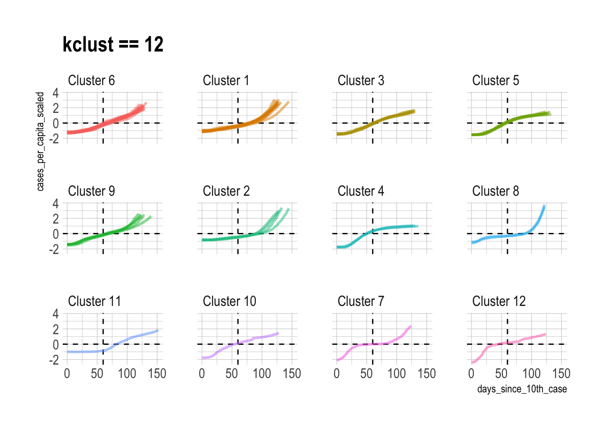

library(tidyverse)
library(tsibble)
library(dtwclust)
library(tidymodels)
library(hrbrthemes)
library(tidycensus)
library(sf)
options(scipen = 999, digits = 4)
theme_set(theme_ipsum())
set.seed(1234)Interactive Tableau visualization of the clusters
The goal of this post is to group states into clusters based on the shape of the curve of a state’s cumulative sum of COVID-19 cases. This type of clustering is useful when the variance in absolute values of a time series obscures the underlying pattern in the data. Since states experienced plateaus and peaks at different times, my hope is that the clustering is able to identify those differences.
This loads the packages I will use in the analysis and set up the environment:
I will adjust the cases to per 100,000, which requires information from the U.S. Census. This code pulls state-level population data from the Census API via tidycensus:
census_data <- get_acs(geography = "state", variables = "B01003_001", geometry = FALSE, year = 2020) %>%
select(state = NAME, population = estimate)This pulls the COVID-19 data from the NYTimes GitHub page:
covid <- read_csv("https://raw.githubusercontent.com/nytimes/covid-19-data/master/us-states.csv") %>%
arrange(state, date) %>%
semi_join(census_data) %>%
filter(date <= "2020-07-18")I use the tsibble package to check if there are implicit gaps in the data. For example, if there was data for 2020-06-01 and 2020-06-03, there is an implicit gap because there is not data for 2020-06-02.
covid %>%
as_tsibble(index = date, key = state) %>%
count_gaps()# A tibble: 0 × 4
# ℹ 4 variables: state <chr>, .from <date>, .to <date>, .n <int>Thankfully, there are not any such gaps. If there were, I would have to impute values for the missing days.
Since states experienced onset of COVID-19 at different times, I find the day each state hit 10 cases, and calculate days_since_10th_case, which I will use instead of date.
covid_10th_case <- covid %>%
filter(cases >= 10) %>%
group_by(state) %>%
slice(1) %>%
ungroup() %>%
select(state, date_of_10th_case = date)
covid <- covid %>%
left_join(covid_10th_case, by = c("state" = "state")) %>%
group_by(state) %>%
mutate(days_since_10th_case = date - date_of_10th_case) %>%
ungroup() %>%
filter(days_since_10th_case >= 0)
covid <- covid %>%
select(state, days_since_10th_case, cases)Next I calculate cases_per_capita:
covid <- covid %>%
left_join(census_data) %>%
mutate(cases_per_capita = (cases / population) * 100000) %>%
select(-population)Next I scale the cases so that the mean is 0 and the standard deviation is 1. Each state has its own mean and standard deviation.
covid <- covid %>%
group_by(state) %>%
mutate(cases_per_capita_scaled = scale(cases_per_capita, center = TRUE, scale = TRUE)) %>%
ungroup()The result of this is that the clustering algorithm will focus on the shape of the line for each state instead of absolute values. This graph shows the difference:
covid %>%
pivot_longer(cols = contains("cases"), names_to = "metric", values_to = "value") %>%
ggplot(aes(days_since_10th_case, value, group = state)) +
geom_hline(yintercept = 0, linetype = 2) +
geom_line(alpha = .1) +
facet_wrap(~metric, ncol = 1, scales = "free_y") +
scale_y_comma()tsclust requires that the input data be a series of lists, not a dataframe. unstack takes a key and value as arguments and turns the dataframe into a list of lists.
covid_list <- covid %>%
select(state, cases_per_capita_scaled) %>%
unstack(cases_per_capita_scaled ~ state)This loops through the clustering function 20 times and saves each output to a list. The first object groups the data into 2 clusters, the second object has 3 clusters, and it continues in that pattern.
cluster_dtw_h <- list()
kclust <- 20
for (i in 2:kclust){
cluster_dtw_h[[i]] <- tsclust(covid_list,
type = "h",
k = i,
distance = "dtw",
control = hierarchical_control(method = "complete"),
seed = 390,
preproc = NULL,
args = tsclust_args(dist = list(window.size = 21L)))
print(i)
}[1] 2
[1] 3
[1] 4
[1] 5
[1] 6
[1] 7
[1] 8
[1] 9
[1] 10
[1] 11
[1] 12
[1] 13
[1] 14
[1] 15
[1] 16
[1] 17
[1] 18
[1] 19
[1] 20The object that tsclust outputs has a complex structure that makes it difficult to work with at scale. The data I need to pull out is stored in various slots. The next step is to write functions that pulls out the data and tidies it up.
Cluster assigments
This function pulls which cluster each state was assigned to, for each kclust.
get_cluster_assignments <- function(object, cluster_number){
df <- slot(object[[cluster_number]], "cluster")
return(df)
}cluster_assignments <- 2:kclust %>%
set_names() %>%
map_df(~get_cluster_assignments(cluster_dtw_h, cluster_number = .x), .id = "kclust") %>%
pivot_longer(cols = -kclust, names_to = "state", values_to = "cluster_assignment") %>%
mutate(kclust = as.numeric(kclust)) %>%
arrange(state, kclust)glimpse(cluster_assignments)Rows: 988
Columns: 3
$ kclust <dbl> 2, 3, 4, 5, 6, 7, 8, 9, 10, 11, 12, 13, 14, 15, 16,…
$ state <chr> "Alabama", "Alabama", "Alabama", "Alabama", "Alabam…
$ cluster_assignment <int> 1, 1, 1, 1, 1, 1, 1, 1, 1, 1, 1, 1, 1, 1, 1, 1, 1, …These graphs shows which states are more likely to be assigned to a different cluster, depending on the number of clusters.
state_variance <- cluster_assignments %>%
distinct(state, cluster_assignment) %>%
count(state, sort = TRUE)
cluster_assignments %>%
left_join(state_variance) %>%
mutate(state = fct_reorder(state, n)) %>%
ggplot(aes(kclust, state, fill = as.factor(cluster_assignment))) +
geom_tile() +
scale_fill_viridis_d() +
labs(fill = "Cluster assignment",
y = NULL) +
theme(legend.position = "bottom", legend.direction = "horizontal")cluster_assignments %>%
distinct(state, cluster_assignment) %>%
count(state) %>%
mutate(state = fct_reorder(state, n)) %>%
ggplot(aes(n, state)) +
geom_col() +
labs(title = "How much each state reacts to an increase in kclust",
x = "Number of clusters a state appears in",
y = NULL)
The number of singelton clusters (clusters with only one state) is an important metric for determining the optimal number of clusters. If a state is truly unique, a singleton cluster may be appropriate. Having 50 singleton clusters, however, would obviously be overfit.
This shows that the number of singleton clusters increases as kclust increases.
cluster_singletons <- cluster_assignments %>%
count(kclust, cluster_assignment) %>%
group_by(kclust) %>%
mutate(min_cluster_population = min(n)) %>%
filter(n == min_cluster_population) %>%
ungroup() %>%
select(kclust, min_cluster_population, n) %>%
group_by(kclust, min_cluster_population) %>%
summarize(n = sum(n)) %>%
ungroup()
cluster_singletons %>%
filter(min_cluster_population == 1) %>%
ggplot(aes(kclust, n)) +
geom_line() +
scale_x_comma() +
labs(x = "kclust",
y = "Number of singleton clusters")There is not a singleton cluster until kclust is 7.
cluster_singletons %>%
mutate(first_singleton = cumsum(min_cluster_population == 1) == 1) %>%
filter(first_singleton == TRUE)# A tibble: 1 × 4
kclust min_cluster_population n first_singleton
<dbl> <int> <int> <lgl>
1 7 1 1 TRUE cluster_assignments %>%
count(kclust, cluster_assignment) %>%
ggplot(aes(kclust, n, color = as.factor(kclust))) +
geom_jitter(show.legend = FALSE) +
geom_vline(xintercept = 8, linetype = 2) +
labs(y = "Cluster population")Cluster distance
This function pulls the average distance of each cluster, for each value of kclust. Clusters with lower average distance are more similar, and those with higher average distance are less similar.
get_cluster_metrics <- function(object, cluster_number){
object %>%
pluck(cluster_number) %>%
slot("clusinfo") %>%
as_tibble()
}cluster_metrics <- map(2:kclust, ~get_cluster_metrics(cluster_dtw_h, .x)) |>
list_rbind(names_to = "kclust")
cluster_metrics# A tibble: 209 × 3
kclust size av_dist
<int> <int> <dbl>
1 1 29 5.91
2 1 23 6.83
3 2 29 5.91
4 2 17 5.44
5 2 6 3.99
6 3 16 4.55
7 3 17 5.44
8 3 13 3.70
9 3 6 3.99
10 4 16 4.55
# ℹ 199 more rowsThis shows that 12 clusters may be the optimal number for kclust. Values greater than that begin to see diminishing returns.
cluster_metrics %>%
ggplot(aes(kclust, av_dist)) +
geom_jitter(aes(color = as.factor(kclust), size = size), show.legend = FALSE) +
geom_smooth(group = 1) +
geom_vline(xintercept = 12, linetype = 2) +
scale_size_continuous(range = c(.5, 4)) +
labs(y = "Average distance")This shows what the individual state time series data looks like when it is grouped into 12 clusters:
best_kclust <- 12
covid %>%
left_join(filter(cluster_assignments, kclust == best_kclust)) %>%
add_count(cluster_assignment) %>%
mutate(cluster_assignment = str_c("Cluster", cluster_assignment, sep = " "),
cluster_assignment = fct_reorder(as.character(cluster_assignment), n),
cluster_assignment = fct_rev(cluster_assignment)) %>%
ggplot(aes(days_since_10th_case, cases_per_capita_scaled,
color = cluster_assignment, group = state)) +
geom_hline(yintercept = 0, linetype = 2) +
geom_vline(xintercept = 60, linetype = 2) +
geom_line(size = 1, alpha = .5) +
facet_wrap(~cluster_assignment, ncol = 4) +
guides(color = FALSE) +
labs(title = "kclust == 12")
I think 13 clusters is appropriate, but there are obviously cases where individual assignments can be disputed. This is an unsupervised clustering problem, so I generally pick the kclust with the least diminishing returns and go with it.
Mapping
The data is aggregated at the state level, which can easily be graphed with ggplot2 and tidycensus.
map <- get_acs(geography = "state", variables = "B01003_001", geometry = TRUE, shift_geo = TRUE)
map %>%
ggplot() +
geom_sf() +
theme_void()This joins the cluster assignments to the map object and summarizes the state polygons by region. This dissolves the state boundaries and creates polygons for each cluster.
map_cluster <- map %>%
left_join(cluster_assignments %>%
filter(kclust == best_kclust), by = c("NAME" = "state")) %>%
add_count(cluster_assignment) %>%
mutate(cluster_assignment = as.character(cluster_assignment),
cluster_assignment = fct_reorder(cluster_assignment, desc(n))) %>%
group_by(cluster_assignment) %>%
summarize()
state_clustered <- map %>%
left_join(cluster_assignments %>%
filter(kclust == best_kclust), by = c("NAME" = "state")) %>%
add_count(cluster_assignment) %>%
mutate(cluster_assignment = as.character(cluster_assignment),
cluster_assignment = fct_reorder(cluster_assignment, desc(n)))This code creates the map, and overlays the state boundaries on the cluster polygons.
map_cluster %>%
ggplot() +
geom_sf(aes(fill = cluster_assignment, color = cluster_assignment),
size = 1) +
geom_sf_text(data = state_clustered, aes(label = cluster_assignment)) +
labs(fill = "Cluster assignment",
color = "Cluster assigmment") +
guides(color = FALSE) +
theme_void() +
theme(legend.position = "bottom",
legend.direction = "horizontal")Cluster 3 stands out as the group of states that are currently struggling with COVID-19 the most. Interestingly, these states are consistently clustered together regardless of the value of kclust, which means that these states are very similar.
Cluster 5 represents the states that had the earliest and worst outbreaks, but have beaten back the virus for now. Cluster 6 are the neighbors of New York and New Jersey. They experienced less peaky curves later than Cluster 5. Cluster 6 is an “echo” of Cluster 5.
The singleton clusters for kclust of 12 are Vermont, Nebraska, and Hawaii. Nebraska had a long period with almost no new cases at the beginning, but then had a very steep increase after that. Vermont’s curve started steeply almost immediately after its 10th case, which distinguishes it from the other states. Hawaii has had two periods of very steep increases sperated by a long period with few new cases. This is very likely due to the difficulty of traveling to the state with travel lockdowns in place.
Sources
- https://rpubs.com/esobolewska/dtw-time-series
- http://www.rdatamining.com/examples/time-series-clustering-classification
- http://rstudio-pubs-static.s3.amazonaws.com/398402_abe1a0343a4e4e03977de8f3791e96bb.html